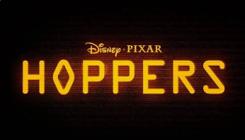
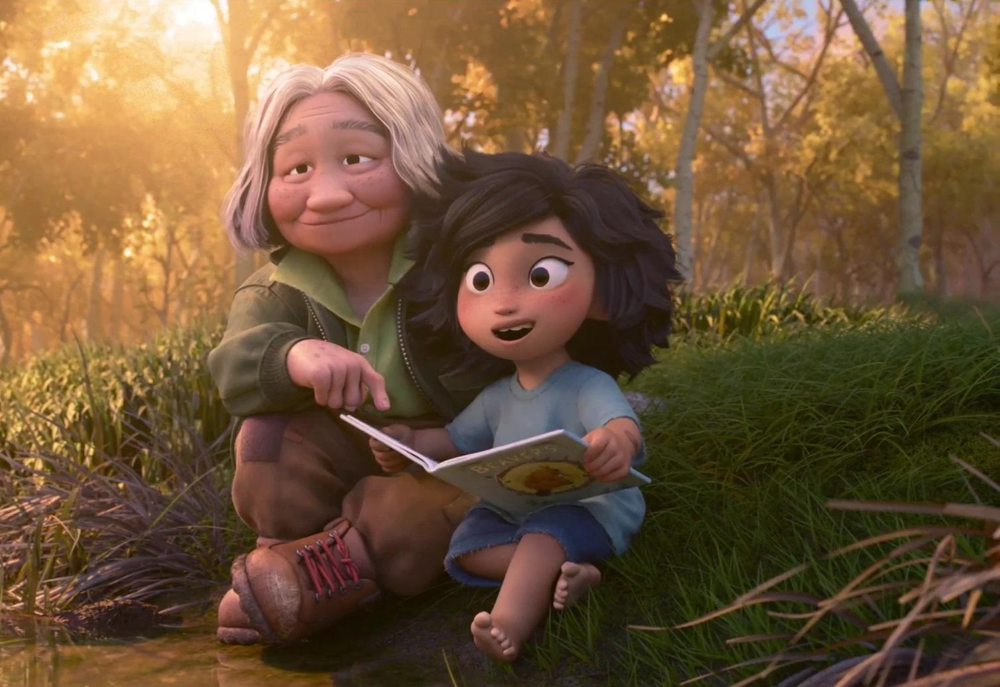
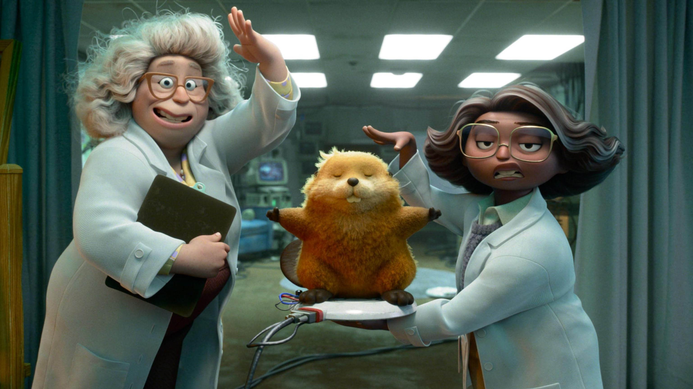

¿Alguna vez te has preguntado qué piensan realmente los animales? En Pixar Animation Studios nos emociona presentar Hoppers, una comedia de ciencia ficción llena de corazón que redefine nuestra conexión con el mundo salvaje.
La historia sigue a Mabel, una joven humana con un espíritu brillante y una mente curiosa que utiliza una tecnología médica revolucionaria. Gracias a este avance, Mabel logra transferir su conciencia al cuerpo de un animal robótico hiperrealista: un castor increíblemente adorable.
Lo que comienza como una misión de infiltración científica se convierte en una aventura inolvidable. Al adentrarse en el reino animal, Mabel entabla una inesperada amistad con el Rey Castor, el carismático líder de la comunidad local. Acompañada por un colorido grupo de amigos del bosque, nuestra protagonista deberá equilibrar su vida en el mundo humano con su nueva realidad salvaje, dándose cuenta de que la verdadera empatía no entiende de especies.
Prepárate para saltar a lo desconocido. Hoppers es una carta de amor a la naturaleza, a las segundas oportunidades y a la belleza de ver el mundo a través de los ojos de otro.